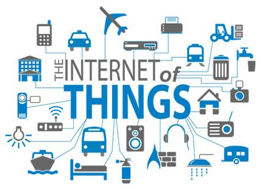
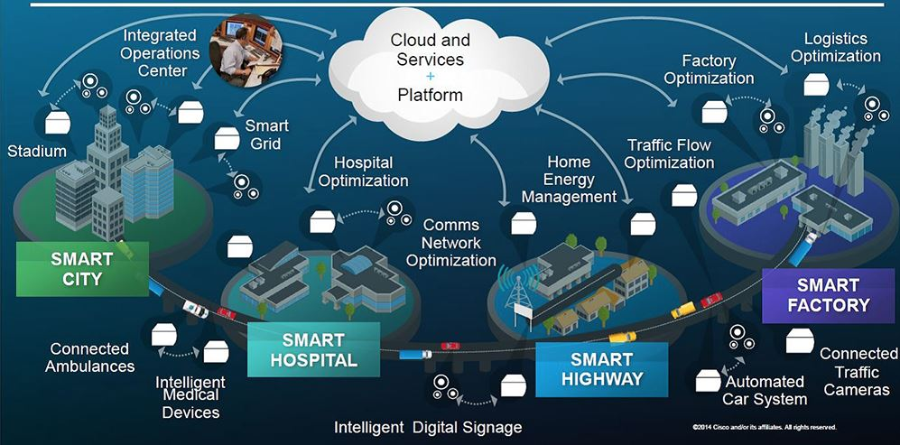

The idea of connecting devices to the internet in order to control them from afar is nothing new, but as internet connections grow faster, connectivity technology becomes smaller, and the mobile world allows us to stay constantly connected, controlling things beyond just our computers has become the next logical step in the evolution of the web.
From dimming the lights in our living room to setting the DVR to starting our cars, the internet allows us to control everyday appliances from across the room or on the other side of the country. And as the internet of Things continues to grow, this connection has become a two-way communication. Our devices can now contact us, letting us know when our car needs maintenance, alerting us when the room temperature gets too low, and even telling us when we're out of milk. internet connected devices have become widespread, and the movement is only in its infancy. In the coming years, more and more of the devices we interact with every day will be just as connected to the world wide web as we are.
The invention of the internet was a large change for the world to adapt to. It has changed everything from business communications to social interactions, and as new technologies are introduced it will continue to change the way we live and work. It is a safe bet that there are many more fascinating innovations for it in our future.